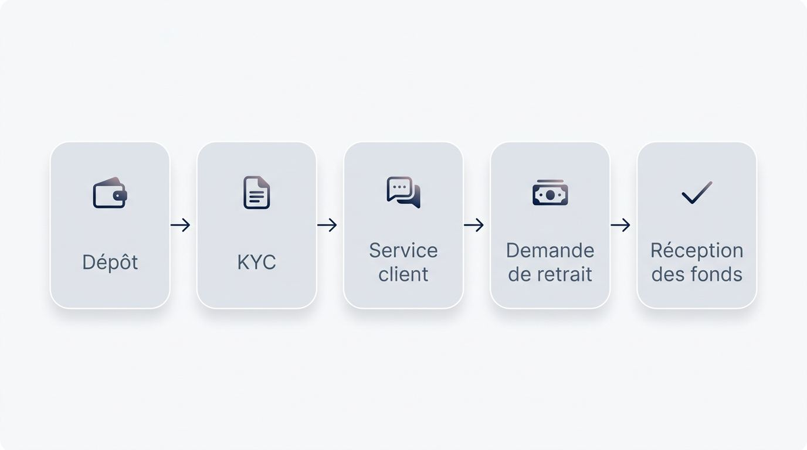
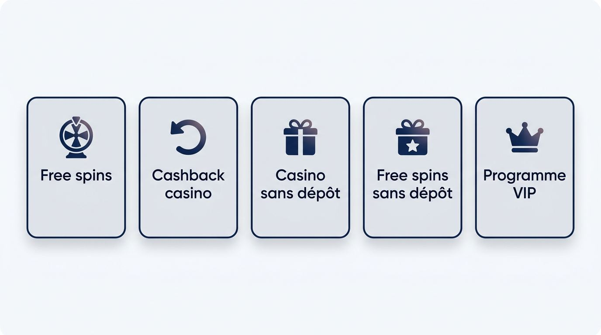
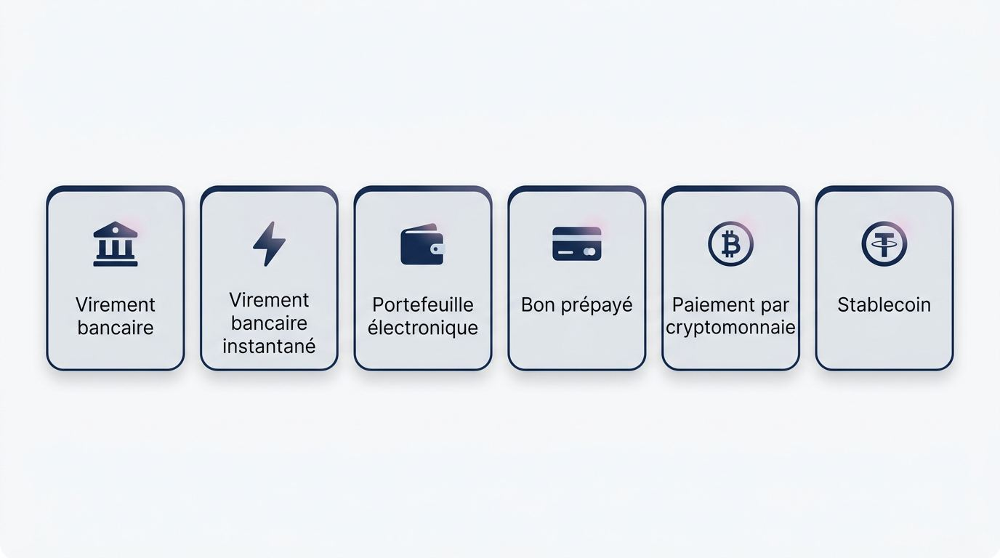
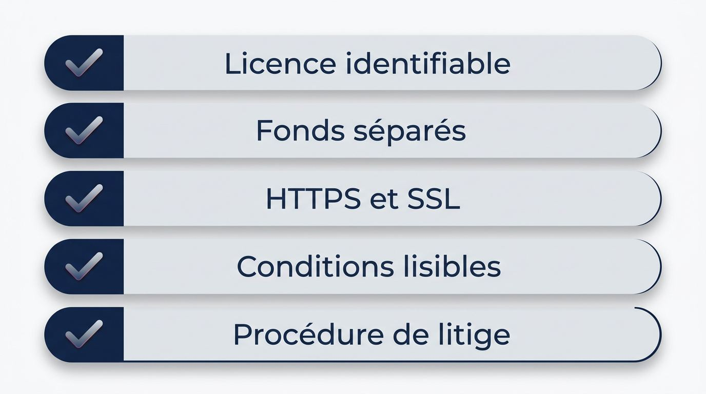
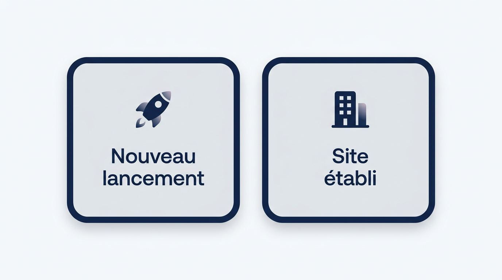

Avant de déposer sur un nouveau casino en ligne, vous cherchez une offre de lancement qui laisse réellement vos gains accessibles. Un bonus généreux perd vite de son intérêt si les règles de mise, le plafond d’encaissement ou la vérification restent flous. Choisissez un opérateur international disponible depuis la France lorsque ses paiements, ses retraits et son assistance donnent des repères vérifiables.
Cette liste est régulièrement revue et actualisée.
Plateformes à comparer
Les offres sont chargées automatiquement depuis la source du comparatif.
Comment sont évalués les nouveaux casinos
Un lancement soigné ne démontre pas la capacité d’un site à traiter correctement votre premier dépôt ou votre premier retrait. Notre avis sur chaque nouveau casino en ligne part d’informations vérifiables, puis s’appuie sur des tests éditoriaux documentés et sur les conditions publiées par l’opérateur pour le KYC, les paiements et le service client. Une preuve de retrait finalisé pèse davantage qu’une inscription rapide ou qu’une offre très visible.

Historique de lancement et stabilité des conditions
La date de lancement donne une idée du recul disponible, tandis que la stabilité des règles indique ce qui peut vous attendre après l’inscription.
- Vérifiez l’identité de la société exploitante, la date de lancement annoncée et la continuité effective du service pour un tout nouveau casino.
- Consultez les règles de modification des conditions afin de savoir comment l’opérateur peut faire évoluer les bonus, les plafonds ou les exigences de vérification.
- Repérez la politique d’inactivité du compte, qui précise les conséquences d’une longue période sans connexion ni activité.
- Lisez les règles contre les abus de bonus, ainsi que les conditions de retrait, pour déterminer si elles restent accessibles et prévisibles après votre dépôt.
- Pesez les avantages et inconvénients des nouveaux casinos à partir de ces éléments visibles, plutôt qu’à partir de leur ancienneté seule.
Tests de dépôt, de vérification et de retrait
Un retrait finalisé et documenté renseigne davantage sur l’expérience réelle qu’un formulaire d’inscription rapide ou une promesse de paiement immédiat.
- Le test commence par un dépôt de casino en ligne, avec contrôle du montant reçu, de la devise affichée et des éventuels frais.
- Il suit le déclenchement du KYC pour relever le moment où le site demande une validation du compte.
- Le service client doit répondre à une question précise sur le paiement ou le bonus, avec une solution claire plutôt qu’un simple accusé de réception.
- La demande de retrait de casino en ligne permet de mesurer le temps d’attente avant traitement.
- La réception des fonds confirme le délai de retrait réellement constaté, en séparant le traitement de l’opérateur du temps pris par le prestataire de paiement.
Conditions qui influencent les retraits réels
La valeur de votre solde dépend aussi des règles qui déterminent le montant, le moment et la méthode de retrait disponibles.
- Un plafond de retrait limite la somme que vous pouvez encaisser sur une période donnée, même si votre solde est supérieur.
- Une règle de mise maximale fixe le montant autorisé par partie dans certaines situations et peut affecter les gains qui restent retirables.
- Une politique d’annulation des paiements indique dans quelles circonstances un dépôt ou une demande de retrait peut être annulé ou recrédité.
- Les restrictions géographiques doivent mentionner clairement la disponibilité du casino pour les lecteurs situés en France.
- Un casino en ligne fiable et sécurisé publie ces conditions avec les méthodes de paiement concernées avant le premier dépôt.
Assistance et service mobile
La qualité du service client se mesure surtout lorsqu’un blocage de compte, une demande KYC ou une question de paiement survient depuis un téléphone.
- Vérifiez si le service client de casino en ligne est joignable en français par chat, courriel ou formulaire.
- Comparez le délai de réponse et la capacité du conseiller à expliquer une condition de bonus, une vérification ou un retrait.
- Contrôlez que la caisse mobile permet d’accéder au compte, de consulter les moyens de paiement et de soumettre une demande de retrait.
- Privilégiez un affichage clair en euros, qui réduit les erreurs de compréhension lors de l’inscription et de l’encaissement.
Bonus de bienvenue et potentiel de retrait
Le bonus de bienvenue le plus élevé ne procure pas forcément la meilleure possibilité de retrait. Les conditions de mise correspondent au volume total que vous devez miser avant de pouvoir retirer les gains liés au bonus. Cette même lecture s’applique au bonus sur dépôt, aux free spins, au cashback et au bonus sans dépôt. Le montant affiché ne suffit donc pas à classer une offre.

Bonus sur dépôt et conditions de mise
Un bonus sur dépôt se juge à partir du parcours qui mène du versement qualifiant à une éventuelle demande de retrait. Le bonus de bienvenue casino peut créditer un montant additionnel dès le premier dépôt, mais le solde en espèces et le solde bonus ne suivent pas toujours les mêmes règles.
- Vérifiez le dépôt minimum requis pour activer le bonus de bienvenue et la devise acceptée.
- Contrôlez les conditions de mise du bonus, car elles fixent le volume de mises à effectuer avant de jouer avec des gains retirables.
- Lisez la date d’expiration. Elle fixe le délai pour utiliser ou valider le bonus, après lequel le bonus ou les gains associés peuvent être supprimés.
- Identifiez l’ordre d’utilisation des soldes afin de savoir si le casino consomme d’abord votre argent déposé ou le crédit promotionnel.
- Consultez les conditions de retrait applicables une fois les exigences remplies.
Free spins, cashback et bonus sans dépôt
Les free spins, le cashback et les offres sans dépôt se comparent selon la somme que vous pourrez conserver après les restrictions applicables. Le plafond de retrait représente le montant maximal que vous pouvez encaisser depuis une promotion donnée.
| Promotion | Avantage présenté | Limite à vérifier |
|---|---|---|
| Free spins | Tours gratuits attribués sur certaines machines | Jeu éligible, valeur par tour, expiration, conditions de mise et plafond de retrait |
| Cashback casino | Pourcentage reversé sur des pertes ou mises définies | Base de calcul, fréquence du crédit, mise requise et statut du cashback |
| Casino sans dépôt | Crédit promotionnel sans versement initial | Vérification du compte, jeux autorisés, conditions de mise et retrait plafonné |
| Free spins sans dépôt | Tours gratuits sans dépôt préalable | Délai d’utilisation, gains convertis en bonus et plafond d’encaissement |
| Programme VIP | Récompenses liées à l’activité du compte | Conditions d’accès, avantages réellement retirables et règles propres au niveau |
Un bonus sans dépôt ne constitue donc pas un montant librement retirable dès son attribution.
Pondération des jeux et jeux exclus
Un bonus garde une utilité pratique si les jeux que vous souhaitez utiliser contribuent suffisamment aux conditions de mise.
- La pondération des jeux exprime le pourcentage de chaque catégorie qui compte dans le volume de mises exigé.
- Une machine à sous en ligne qui contribue à faible taux rallonge le temps et le montant de mises nécessaires pour remplir les conditions.
- Les jeux de table peuvent compter partiellement ou être soumis à des règles spécifiques selon le casino.
- Certains jeux de casino en direct, titres de machines ou jackpots progressifs sont exclus et ne contribuent alors pas du tout aux conditions de mise.
- Vérifiez la liste des jeux admissibles avant d’accepter un bonus plutôt qu’après avoir commencé à jouer.
Quand un bonus plus modeste est préférable
Une promotion plus modeste peut préserver un meilleur potentiel de retrait si elle demande moins de mises et autorise davantage de jeux. Le meilleur nouveau casino en ligne pour votre profil correspond à une offre atteignable avec votre budget et vos jeux habituels.
- Comparez le montant du bonus avec les conditions de mise.
- Vérifiez l’éligibilité des jeux et la durée avant expiration.
- Préférez un plafond de retrait praticable et des règles écrites sans ambiguïté.
Promotions avec mécanique de machine à pince
Une promotion avec mécanique de machine à pince attribue un prix selon un tirage ou une sélection visuelle, souvent après un dépôt ou une action définie. Certaines offres du marché associent ainsi un bonus sur dépôt, des free spins et un lot de gamification. La valeur du prix dépend de son déclencheur, des conditions de mise attachées et du plafond de retrait, au même titre qu’un bonus classique.
Jeux de casino et qualité du casino en direct
La profondeur utile d’un catalogue de jeux de casino repose sur les studios identifiables, la variété des tables en direct, la transparence des informations et l’éligibilité des jeux aux bonus. Un volume de titres annoncé sans détail sur les fournisseurs renseigne peu sur l’offre que vous pourrez réellement utiliser. Les restrictions de bonus doivent rester cohérentes avec les catégories qui vous intéressent.
Machines à sous et studios reconnus
Les studios identifiables et le RTP affiché au niveau du jeu fournissent des repères plus utiles qu’un simple total de machines.
- Vérifiez la présence de Pragmatic Play, Play'n GO, NetEnt et d’autres studios reconnus lorsqu’ils figurent réellement dans le catalogue.
- Consultez l’arrivée des nouvelles sorties plutôt que de vous limiter aux jeux mis en avant sur la page d’accueil.
- Contrôlez l’accès aux jackpots progressifs, qui peuvent suivre des règles distinctes des autres machines.
- Le taux de retour au joueur, ou RTP pour Return to Player, indique le pourcentage théorique des mises reversé aux joueurs sur une longue période.
- Un RTP publié améliore la transparence du jeu, sans constituer une garantie de gain pour une session donnée.
Offre de casino en direct
Un casino en direct utile propose des studios et des tables identifiables, accessibles depuis la France avec un flux mobile stable. La présence d’un fournisseur reconnu comme Evolution Gaming permet de vérifier plus facilement quelles variantes sont proposées et sous quelles conditions d’accès.
- Recherchez une couverture claire de roulette, blackjack, baccarat et autres jeux de table en direct.
- Vérifiez la diversité des variantes, plutôt qu’une présence symbolique de quelques tables.
- Contrôlez l’accès depuis la France et la stabilité du flux sur smartphone.
- Examinez l’interface du studio de croupiers en direct, notamment la lisibilité des mises et des commandes.
Jeux de table et jeux instantanés
Les catégories hors machines à sous déterminent l’étendue réelle d’un casino pour les lecteurs qui recherchent une expérience plus variée.
- Une sélection exploitable de roulette, blackjack et baccarat élargit l’offre au-delà des machines.
- Les jeux instantanés de casino peuvent inclure des formats courts dont la disponibilité varie fortement selon les plateformes.
- Vérifiez le nombre de variantes accessibles dans chaque catégorie, car une seule version d’un jeu de table ne représente pas une couverture complète.
- Consultez les règles de participation aux bonus avant d’utiliser ces jeux.
Informations sur l’équité des jeux
Les déclarations d’équité deviennent utiles lorsque vous pouvez vérifier une certification, un laboratoire indépendant ou un RTP publié pour un jeu précis.
- Une certification RNG documentée indique qu’un générateur de nombres aléatoires a fait l’objet d’un contrôle.
- Les références à eCOGRA, iTech Labs ou GLI doivent renvoyer à une preuve publiée par l’opérateur ou le fournisseur de jeux.
- Les informations « prouvablement équitables » peuvent permettre de contrôler certains résultats sur les jeux qui proposent cette fonction.
- Un RTP affiché jeu par jeu offre une information concrète sur le fonctionnement théorique du titre.
- Ces éléments appuient l’évaluation de l’équité des jeux, sans suffire à qualifier un casino en ligne sécurisé ou à confirmer la qualité de ses retraits.
Fonctionnalités émergentes des nouveaux casinos
L’intelligence artificielle, la gamification et la réalité virtuelle méritent votre attention seulement après la vérification des retraits, des conditions et des paiements. Une nouvelle plateforme de casino en ligne doit distinguer les fonctions disponibles des promesses associées à son lancement.
- Une personnalisation assistée par intelligence artificielle peut modifier les recommandations de jeux ou de promotions visibles sur le compte.
- La gamification ajoute des missions, niveaux ou récompenses dont les règles de retrait doivent rester lisibles.
- La réalité virtuelle concerne des expériences spécifiques.
- Un agrégateur de jeux interentreprises peut étendre le catalogue, sans garantir à lui seul la présence de fournisseurs précis.
- Pay N Play doit être présenté comme un parcours d’accès disponible ou non selon l’opérateur et le moyen de paiement.
Dépôts et retraits sur un nouveau casino en ligne
La question centrale de la caisse concerne votre premier retrait, sa clarté, son coût et sa prévisibilité. Un dépôt de casino en ligne rapide ne renseigne pas sur la facilité d’encaissement. Comparez les options selon l’usage de l’euro, les frais, les plafonds, les délais, la disponibilité au retrait et la vérification requise. Avant de financer le compte, vérifiez les montants minimums, les frais, la devise et le délai de traitement affiché.

Moyens de paiement accessibles depuis la France
Les méthodes de paiement doivent être comparées selon leur utilisation en euros et leur disponibilité pour le dépôt comme pour le retrait depuis la France.
| Catégorie de paiement | Dépôt | Retrait | Solde en euros et points à vérifier |
|---|---|---|---|
| Virement bancaire | Généralement proposé | Généralement proposé | Vérifiez le solde EUR, les frais et le délai bancaire |
| Virement bancaire instantané | Selon le site et la banque | Plus rarement disponible | Confirmez l’éligibilité au retrait avant le dépôt |
| Portefeuille électronique | Selon les opérateurs | Souvent conditionné au dépôt initial | Skrill, Neteller ou MiFinity ne doivent être considérés que s’ils apparaissent dans la caisse |
| Bon prépayé | Souvent disponible pour déposer | Souvent indisponible pour retirer | Paysafecard peut imposer un autre moyen pour recevoir les fonds |
| Paiement par cryptomonnaie | Selon les réseaux proposés | Selon les règles du portefeuille | Vérifiez la disponibilité du retrait, les frais réseau et la conversion en euros |
| Stablecoin | Selon l’opérateur | Selon le réseau retenu | Contrôlez le jeton accepté, le réseau et les conditions de retrait |
La disponibilité d’un paiement par portefeuille électronique de casino ou d’un paiement par cryptomonnaie ne signifie pas automatiquement que le même moyen sera accepté pour encaisser vos fonds.
Ce qui rend un premier retrait fiable
Le délai annoncé par un casino couvre souvent une seule phase, alors que vous attendez le moment où les fonds arrivent sur votre compte.
- Après votre demande de retrait, vérifiez la période d’attente du retrait, qui correspond au temps entre la demande et le début du traitement par l’opérateur.
- Consultez ensuite le délai de traitement interne, les frais éventuels et les plafonds appliqués à votre demande.
- Contrôlez la correspondance entre la méthode utilisée pour le premier dépôt et celle autorisée pour le paiement sortant.
- Une vérification liée au moyen de paiement peut retarder l’encaissement si le site demande des informations complémentaires.
- Les contrôles d’origine des fonds et de lutte contre le blanchiment peuvent entraîner une demande de justificatifs supplémentaires et prolonger le délai.
- Une fois le retrait envoyé, le prestataire de paiement applique son propre temps de transfert, distinct du traitement par le casino.
Transparence des paiements en cryptomonnaie
Un casino crypto devient plus simple à évaluer lorsque sa caisse détaille le portefeuille requis, le réseau utilisé, les frais et les règles de retrait. Le paiement par cryptomonnaie d’un casino constitue une méthode parmi d’autres pour jouer en ligne depuis la France, sans garantir par lui-même confidentialité, rapidité ou meilleur taux de change.
- Vérifiez l’adresse de portefeuille crypto demandée et les réseaux acceptés au retrait.
- Contrôlez les stablecoins proposés, ainsi que les frais de réseau affichés avant validation.
- Lisez les montants minimums, plafonds et éventuelles conversions appliquées au paiement sortant.
Signaux d’alerte avant un dépôt
Les conditions visibles dans la caisse permettent souvent d’anticiper des difficultés évitables avant de financer votre compte sur un site. Un nouveau casino sécurisé doit présenter des règles de paiement compréhensibles, avec les délais, plafonds, frais et contrôles supplémentaires éventuels.
- Une grille de frais absente ou imprécise vous empêche d’estimer le montant réellement reçu au retrait.
- Un plafond de retrait non chiffré peut limiter vos encaissements sur plusieurs jours ou périodes.
- Un délai de traitement non indiqué laisse sans repère entre la demande et l’envoi des fonds.
- Une politique d’annulation ou de réversion de paiement précise si un dépôt ou une demande de retrait peut être annulé, recrédité ou renvoyé vers son moyen initial.
- Des exigences de vérification seulement mentionnées après le dépôt compliquent l’évaluation du parcours de paiement.
Devise et clarté de la caisse
Un affichage cohérent en euros réduit les erreurs de conversion et rend les seuils immédiatement compréhensibles pour un joueur français sur un casino en ligne.
- Vérifiez que le solde et les transactions apparaissent clairement en EUR.
- Contrôlez l’explication fournie pour toute conversion de devise.
- Repérez les montants minimums de dépôt et de retrait avant de valider un paiement.
- Assurez-vous que la caisse mobile affiche les mêmes informations que la version en ligne sur ordinateur.
Choisir un casino international fiable depuis la France
La confiance repose sur des éléments que vous pouvez localiser au niveau de l’opérateur, dont la licence, les recours, les règles de compte, le traitement des fonds et la sécurité technique. Un nouveau casino étranger ne forme pas une catégorie uniforme, et un casino en ligne fiable publie des informations vérifiables avant le dépôt. Ces preuves complètent l’analyse de la caisse avant votre décision.

Statut de licence et recours en cas de litige
Une licence de casino en ligne aide à comparer un opérateur lorsque vous pouvez identifier la société, le numéro de licence, la juridiction et une procédure de plainte accessible. Ces éléments permettent aussi de situer une offre de casino en ligne légal en France dans son cadre international, sans confondre une autorisation étrangère avec une garantie de paiement.
| Type de licence | Informations à vérifier | Recours et procédure visible |
|---|---|---|
| Malta Gaming Authority, ou MGA | Nom de l’exploitant, numéro de licence et inscription éventuelle dans le registre de la MGA | Conditions de plainte, interlocuteur désigné et modalités d’escalade |
| Licence de jeu de Curaçao, dont les dispositifs Curaçao eGaming | Société détentrice, référence de licence et mentions réglementaires affichées | Procédure de réclamation et informations sur le traitement des litiges |
| PAGCOR | Identité de l’opérateur, licence applicable et juridiction mentionnée | Canal de plainte, règles de résolution et coordonnées accessibles |
Cherchez ces informations dans le pied de page, les conditions générales ou la page consacrée à la licence. Chaque cadre applique ses propres modalités de fonctionnement et de protection des joueurs, ce qui impose de vérifier aussi la voie de recours publiée par le casino.
Fonds des joueurs et conditions de compte
Les politiques écrites décrivent mieux le traitement de votre solde qu’une formule générale sur la confiance affichée par un nouveau site de casino en ligne.
- Recherchez une mention sur les fonds des joueurs séparés, parfois désignés comme fonds ségrégués, afin de connaître le mode de conservation annoncé.
- Consultez les règles de fermeture du compte, qui peuvent déterminer le traitement du solde restant.
- Lisez la politique d’inactivité du compte, soit les règles appliquées après une période définie sans activité.
- Vérifiez comment le site annonce les changements futurs de conditions, car ils peuvent modifier l’accès au compte ou les règles applicables.
Sécurité du site et fiabilité technique
Le protocole HTTPS et le chiffrement SSL protègent les données échangées entre votre appareil et le site, mais ils ne suffisent pas à qualifier un casino en ligne sécurisé.
- Vérifiez la présence du protocole HTTPS dans l’adresse et la validité apparente du certificat SSL.
- Contrôlez que le site affiche une société exploitante identifiable et des conditions générales accessibles.
- Rapprochez ces éléments de la licence, des règles de retrait, des conditions de compte et de la procédure de litige.
- Un casino en ligne sécurisé associe ces informations techniques à des conditions d’exploitation lisibles.
Le contexte français
En France, l’Autorité Nationale des Jeux, ou ANJ, régule les produits de paris et de poker en ligne autorisés. Les offres internationales de jeux de casino relèvent d’autres régimes de licence. Vérifiez donc la disponibilité pour la France dans les conditions avant l’inscription ou le dépôt, puis examinez les paiements, l’affichage EUR, le support français et les règles de retrait publiées.
Nouveaux casinos et sites établis
Les casinos en ligne récents peuvent proposer des offres de lancement ou des fonctions nouvelles, tandis que les sites établis disposent parfois d’un historique plus long de retraits, de support et de conditions stables. Les avantages et inconvénients des nouveaux casinos s’évaluent à partir de preuves produit et opérationnelles.

Les avantages possibles d’un nouveau lancement
Un casino en ligne nouvellement lancé mérite votre attention si ses améliorations visibles facilitent réellement votre usage. Un nouveau casino online peut notamment proposer les éléments suivants.
- Une interface récente peut simplifier la recherche de jeux, le suivi du solde et la lecture des conditions.
- Des intégrations récentes de fournisseurs peuvent enrichir l’offre avec des titres ou tables disponibles dès le lancement.
- Des paiements plus flexibles ont un intérêt si le retrait par la méthode choisie reste clairement prévu.
- Les campagnes de lancement, souvent renforcées lors des périodes promotionnelles, doivent conserver des conditions de bonus lisibles.
Quand l’historique d’exploitation compte
Un historique utile montre comment un opérateur traite les retraits, les demandes d’assistance et les changements de conditions au-delà de sa phase de lancement. Il aide à juger si un nouveau casino fiable peut répondre à vos attentes pour un premier encaissement.
- Recherchez des preuves documentées de retraits réalisés dans les délais annoncés.
- Vérifiez si le service client apporte des réponses cohérentes à des questions précises sur le compte ou le paiement.
- Comparez les versions successives des conditions lorsque le site indique ses modifications.
- Contrôlez la stabilité de l’accès, de la caisse et des jeux sur une période suffisamment longue.
La décision avant un premier dépôt
Votre premier dépôt doit suivre un contrôle court qui donne la même place au retrait possible et à l’usage prévu du casino.
- Vérifiez les plafonds, frais et délais affichés pour le retrait.
- Confirmez le calendrier du KYC et la capacité du support à répondre clairement.
- Assurez-vous que les jeux choisis et le bonus accepté correspondent à vos habitudes.
- Financez le compte seulement si ces conditions restent adaptées à votre budget et à votre expérience recherchée.
Expérience de casino mobile en France
Une expérience de casino mobile complète vous permet de trouver des jeux, gérer votre argent, transmettre des documents et utiliser le casino en direct depuis un smartphone. La simple compatibilité mobile ne renseigne pas sur la clarté réelle du lobby, de la caisse ou des contrôles de compte en France.
Navigation dans le lobby et découverte des jeux
Sur petit écran, un catalogue de jeux de casino devient utile si vous retrouvez rapidement une machine ou une catégorie sans faire défiler des pages entières.
- Testez la recherche par titre, studio ou type de jeux.
- Vérifiez que les filtres distinguent clairement les machines, jeux de table et formats en direct.
- Contrôlez la lisibilité des catégories et la possibilité d’ajouter des jeux aux favoris.
- Assurez-vous que ces commandes restent accessibles pendant la consultation des machines éligibles à vos bonus.
Caisse mobile et gestion du compte
Les actions financières et la vérification d’identité de casino exigent une présentation nette sur smartphone, car une erreur peut retarder un dépôt, un retrait ou l’accès au compte.
- Le parcours de dépôt doit afficher le moyen choisi, le montant et la devise avant validation.
- La demande de retrait doit indiquer la méthode disponible et le statut de traitement.
- L’inscription au casino en ligne et l’envoi des documents KYC doivent rester lisibles sur l’écran du téléphone.
- Les limites de dépôt et autres contrôles du compte doivent être accessibles sans quitter la caisse.
Casino en direct et performance de connexion
La qualité d’un casino en direct sur mobile dépend de la stabilité du flux et de la réactivité des commandes du studio de croupiers en direct. Le chargement général du site ne permet pas, à lui seul, d’évaluer cette expérience.
- Observez le temps de chargement du flux avant de rejoindre une table.
- Vérifiez la stabilité de l’image et du son sur une connexion mobile française.
- Contrôlez la réactivité des mises, du chat et des commandes de table.
- Recherchez une indication sur la consommation de données liée au casino en direct.
Application et accès via navigateur
Le navigateur et l’application de casino en ligne offrent deux voies d’accès à comparer selon leur fiabilité sur votre smartphone. Une application n’apporte un avantage que si elle reste compatible avec votre appareil et reçoit les mises à jour nécessaires.
- Vérifiez si le casino mobile fonctionne directement depuis un navigateur récent.
- Contrôlez l’existence d’une application, sa compatibilité et son mode d’installation.
- Consultez les exigences de mise à jour et la disponibilité des fonctions de caisse sur chaque accès.
Inscription, vérification et premier retrait
La transparence de l’inscription et de la vérification vous permet d’anticiper les étapes qui peuvent influencer l’accès au compte et le premier retrait. Les contrôles habituels du compte, les retenues appliquées par l’opérateur et le délai du prestataire de paiement doivent apparaître comme des phases distinctes.
Conditions pour créer un compte
Avant de remplir un formulaire, vous devez pouvoir confirmer les exigences essentielles du nouveau site de casino online.
- Vérifiez les informations demandées pour créer le compte.
- Confirmez que le site accepte les inscriptions depuis la France.
- Choisissez un compte en EUR lorsque cette option est proposée.
- Contrôlez la confirmation d’âge requise avant l’ouverture du compte.
Délais et documents KYC
Le Know Your Customer, ou KYC, désigne la vérification d’identité qui confirme les informations du titulaire du compte. Des règles KYC publiées avant le dépôt facilitent l’anticipation du délai de retrait d’un casino et des demandes éventuelles de vérification d’identité.
- Vérifiez le moment où l’opérateur peut déclencher le KYC, à l’inscription, au dépôt ou avant le retrait.
- Consultez les documents demandés, tels qu’une pièce d’identité et un justificatif de domicile.
- Recherchez les informations sur les contrôles d’origine des fonds et la lutte contre le blanchiment lorsque le cas l’exige.
- Contrôlez si les exigences sont accessibles avant votre première demande de retrait.
Retraits en attente et conditions de validation
Un statut de retrait en attente correspond à une phase précise entre votre demande et le début du traitement par l’opérateur. Elle peut inclure des validations complémentaires avant qu’un retrait de casino en ligne soit envoyé.
- Vérifiez la durée affichée pour le statut en attente.
- Consultez les conditions relatives à une demande de document supplémentaire.
- Contrôlez si le bonus doit être validé avant le paiement.
- Vérifiez si le casino autorise l’annulation de la demande durant cette phase.
- Distinguez le traitement interne du temps de transfert appliqué ensuite par le prestataire de paiement.
Conditions de compte transparentes
Les règles qui influencent l’accès au compte ou le solde restant doivent être faciles à trouver avant l’inscription sur le site.
- Vérifiez les conditions de fermeture du compte.
- Repérez les frais liés à la politique d’inactivité du compte.
- Contrôlez les échéances fixées pour terminer une vérification.
- Consultez les règles appliquées au solde restant en cas de fermeture ou d’inactivité.
Outils de jeu responsable des casinos internationaux
Les outils de jeu responsable constituent des fonctions de compte concrètes à vérifier avant le dépôt. Ils vous aident à encadrer vos dépenses, votre temps de jeu et l’accès au compte selon les options réellement disponibles.
Limites de dépôt et de dépenses
Les limites permettent de fixer des bornes avant de commencer à jouer, sous réserve de vérifier leur disponibilité et leurs règles d’ajustement.
- Les limites de dépôt encadrent le montant que vous pouvez ajouter au compte sur une période définie.
- Les limites de pertes et de mises aident à encadrer l’activité de jeu selon les options de l’opérateur.
- Les notifications de réalité indiquent le temps passé ou l’activité enregistrée pendant le jeu.
- Vérifiez dans les outils de jeu responsable les conditions applicables à une baisse ou à une hausse de limite.
Pauses et auto-exclusion
Une pause temporaire et l’auto-exclusion répondent à des besoins distincts de contrôle du compte.
- Une période de refroidissement suspend l’accès pendant une durée choisie.
- Une pause temporaire permet d’interrompre le jeu sans engager une restriction longue.
- L’auto-exclusion applique une limitation de compte plus durable selon les conditions affichées.
- Consultez les règles de réactivation avant d’utiliser l’une de ces options.
Où trouver les informations de jeu responsable
La visibilité des contrôles avant le dépôt indique si vous pourrez les utiliser sans chercher dans plusieurs pages du site. L’espace compte, la politique dédiée et le service client doivent fournir des accès compréhensibles.
- Recherchez les limites et les pauses dans les réglages du compte.
- Consultez la page consacrée au jeu responsable.
- Vérifiez le canal de support prévu pour demander une modification de limite.
Les points essentiels avant de choisir un nouveau casino en ligne
Un nouveau casino se choisit à partir de preuves sur le retrait et les conditions, autant que sur ses bonus et ses jeux.
- Comparez la clarté du premier retrait, les plafonds, les frais et le calendrier de vérification.
- Évaluez le bonus selon ses conditions de mise, ses jeux éligibles et son plafond d’encaissement.
- Vérifiez la profondeur du casino en ligne, l’affichage en EUR et les méthodes de paiement disponibles.
- Consultez les règles de compte, le support et l’usage mobile avant de financer votre solde.
Comparez les nouveaux casinos avant votre premier dépôt
Un comparatif des nouveaux casinos en ligne permet de mettre en regard une offre de lancement et les conditions concrètes de fonctionnement. Avant votre premier dépôt, privilégiez l’équilibre entre bonus utilisable, retrait clair, jeux adaptés, assistance accessible et protections de compte visibles. Votre choix gagne en cohérence lorsque chaque condition est consultable avant l’inscription.
Questions fréquentes sur les nouveaux casinos en ligne
Que faire si un retrait reste en attente plus longtemps que prévu ?
Vérifiez le délai de retrait affiché, votre statut KYC et les conditions applicables, puis contactez le support avec la référence de retrait.
Un casino peut-il demander de nouveaux documents après une vérification KYC ?
Oui, un casino peut demander des documents complémentaires après le KYC, notamment pour l’identité, le paiement ou l’origine des fonds. Consultez les exigences et délais publiés dans les conditions du compte.
Peut-on modifier une limite de dépôt après l’avoir activée ?
La modification d’une limite de dépôt dépend des règles de l’opérateur. Consultez les conditions de jeu responsable avant l’inscription, puis utilisez l’espace compte ou le service client si la règle n’est pas visible.